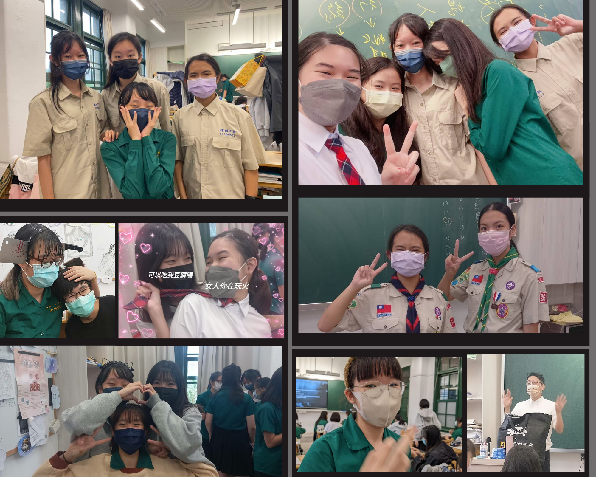
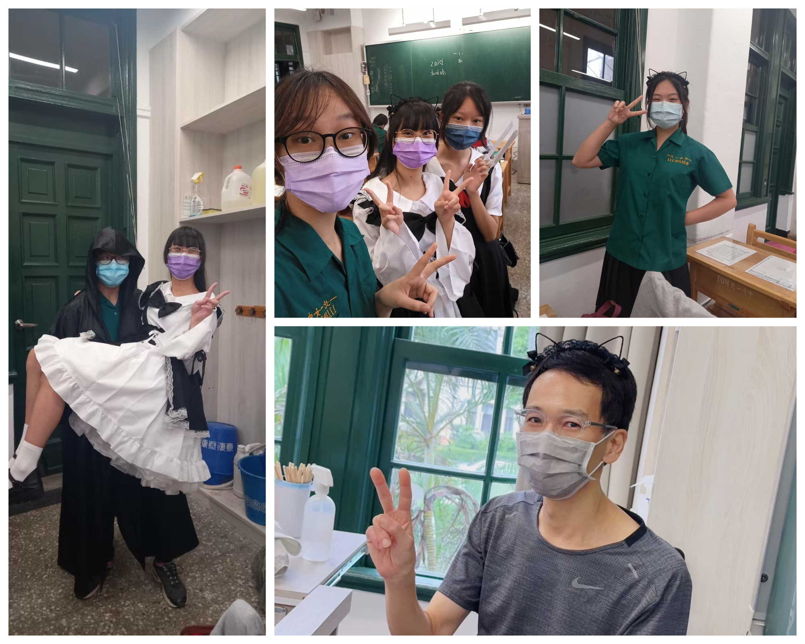
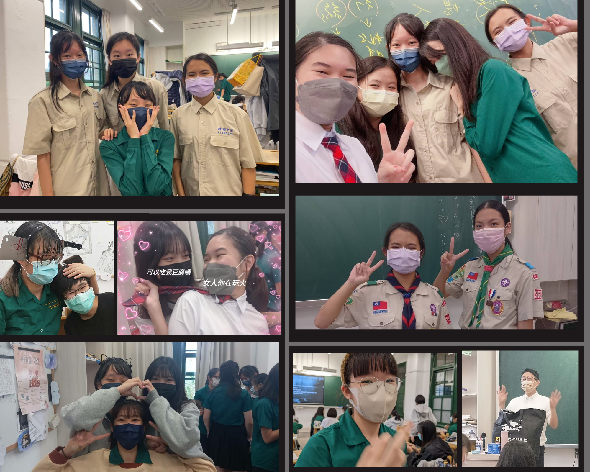
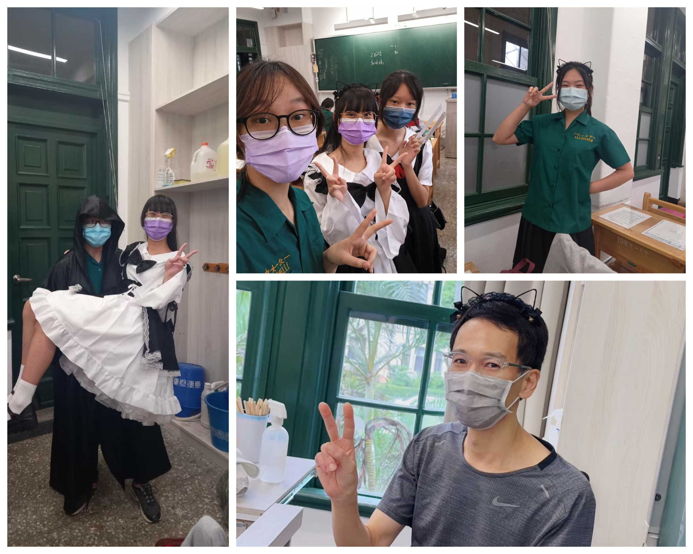

是愉快的早晨。精心佈置的場地洋溢著愉悅的氛圍，他一身白衫，搭上恰好的黑色西褲，繫上紅色的領帶，更顯英姿挺拔。他略緊張的搔了搔額前的張揚的瀏海，像安撫熱切躁動的心情。
她的出現耀眼奪目。眉角彎彎彷若倒掛的新月，滿溢溫柔的神采，黑色長裙有鮮紅的蝴蝶結綴飾/黑白女僕裝經典的色彩交織出她的獨特風采，烏黑秀髮以紅色緞帶/黑色蝴蝶結高高扎起，彷彿蝴蝶般輕盈優雅。那是他眼中最動人的美景。
當畫面定格永恆，圍觀的眾人響起如雷的掌聲。原來是萬聖節的裝扮盛會大功告成，以完美詮釋的青春的求婚現場畫下溫馨的句點。這場萬聖節的演出，無端令人深陷情節中，為他們的故事感動。
—戀∙萬聖傾城
忠班幼兒園
照片牆
活動
特別感謝